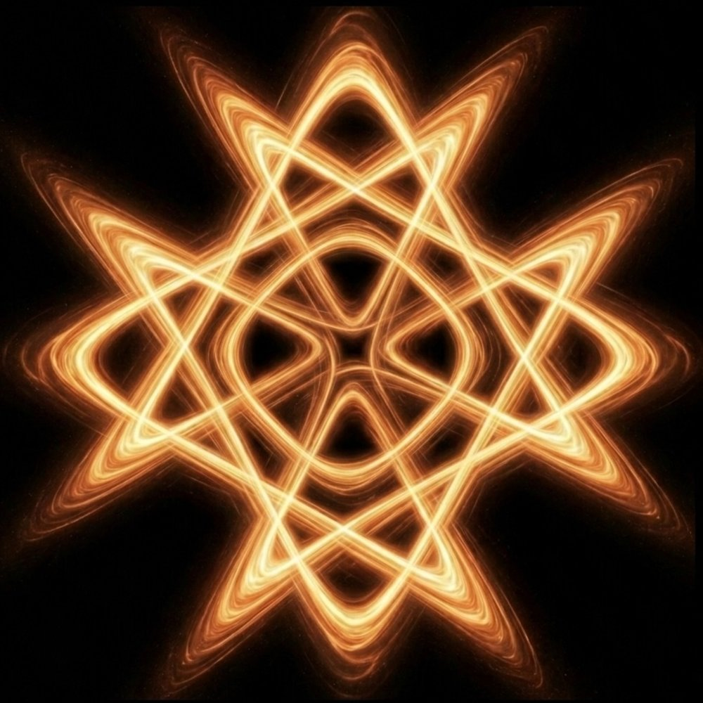
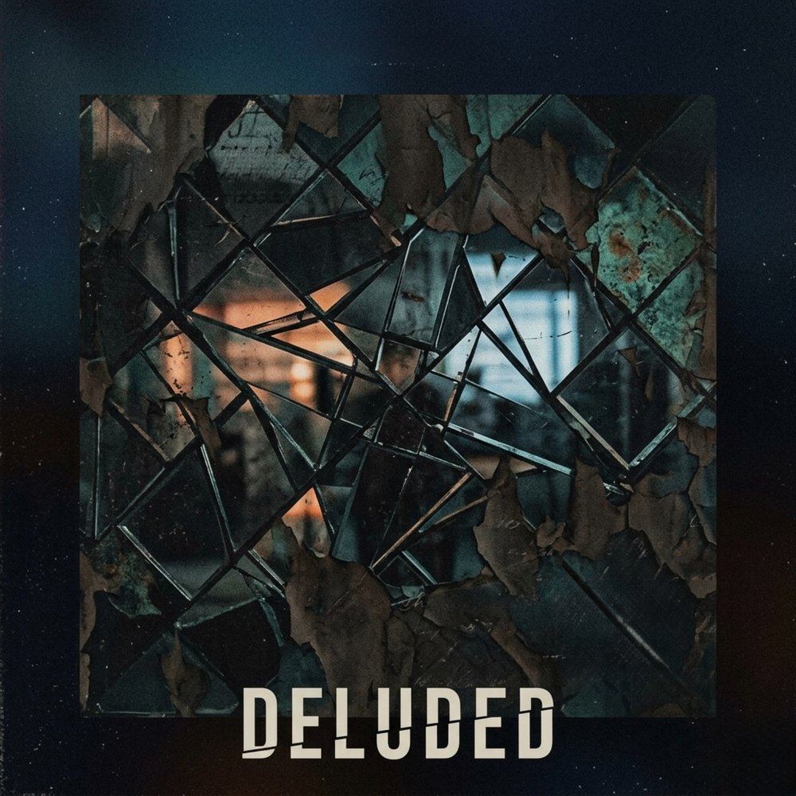
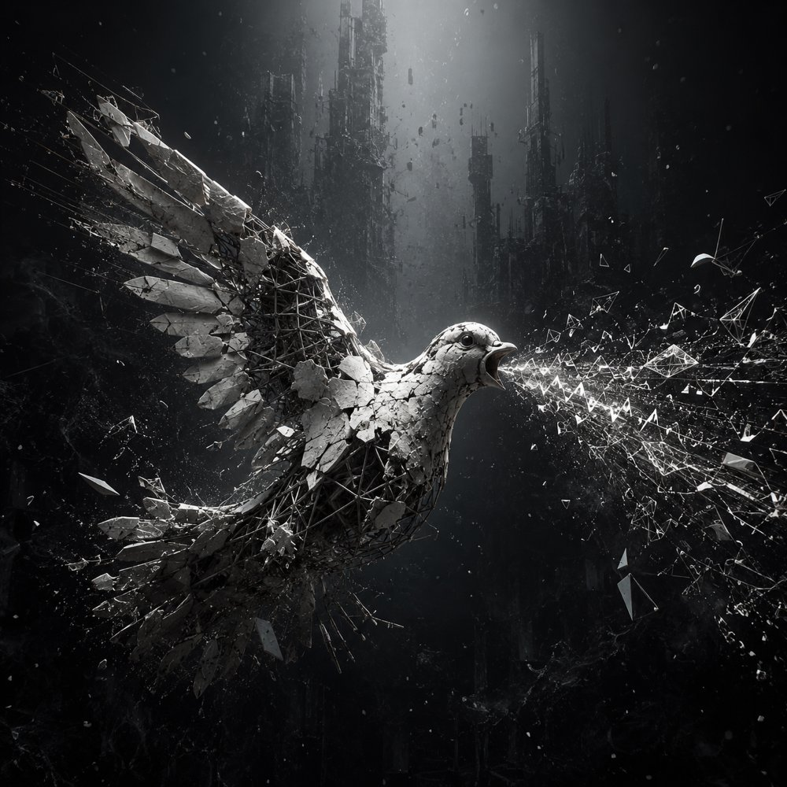
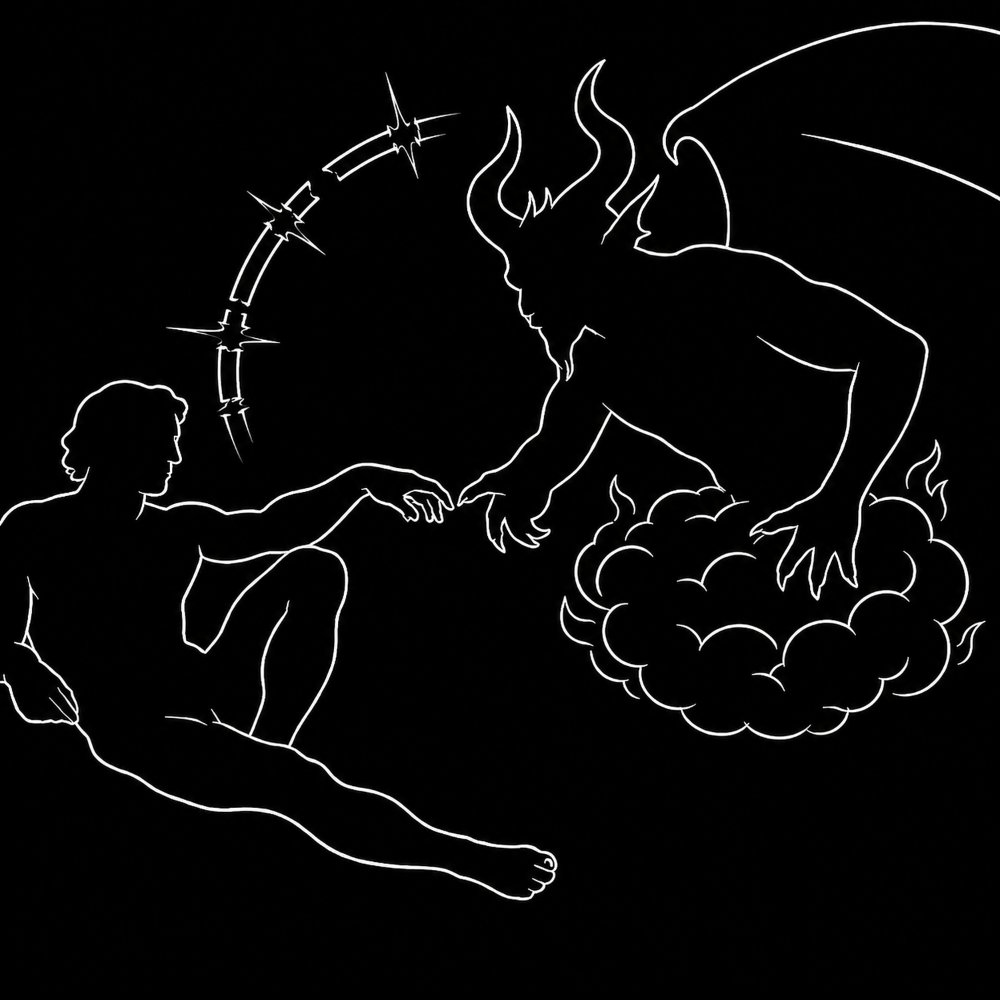

albumII
SACRILEGIUM
An absurdist liturgy—belief and its undoing, voiced at once.
Featured album II / 7 movements
An absurdist liturgy — belief and its undoing, voiced at once.
Liturgy despite the silence.
Also in the catalogNOS CREEMOS ALGO
01 / The catalog
02 albums / 05 singles
7 releases
albumII
An absurdist liturgy—belief and its undoing, voiced at once.

albumI
Matter wakes, asks why, and chooses love before entropy answers.

singleS.01
Irrational belief disguised as devotion.
singleS.02
False equivalence weighed against a wounded soul.

singleS.03
Glossolalia, restitution, and ritual after faith.

singleS.04
The mundane crowned sacred by ordinary hands.

singleS.05
Animals making noise, convincing ourselves we are something, and carrying on anyway.
02 / About FaXto
FaXto is absurdist in spirit and liturgical in form: sacred grammar carried through electronic, country, operatic, glitch, rock, and machine-made sound. Each record confronts faith, doubt, power, compassion, and the silence between them.
Move · swipe · explore
Move the pointer to disturb the field. Swipe horizontally, choose a visual mode, or use the left and right arrow keys while the field is focused. Motion can be paused.
No inherited purpose. No cosmic guarantee. The silence is the premise, not the conclusion.
To choose love, justice, and meaning without pretending the universe supplied them.
Religious forms are dismantled, reclaimed, and returned as human instruments.
03 / On the machine
Compositions, arrangements, and voices are generated with Suno from written direction and lyrics, then selected, revised, sequenced, and framed into finished records. The authorship is not hidden; the tension between human intention and synthetic production belongs inside the work.
IdeaMachineChoice